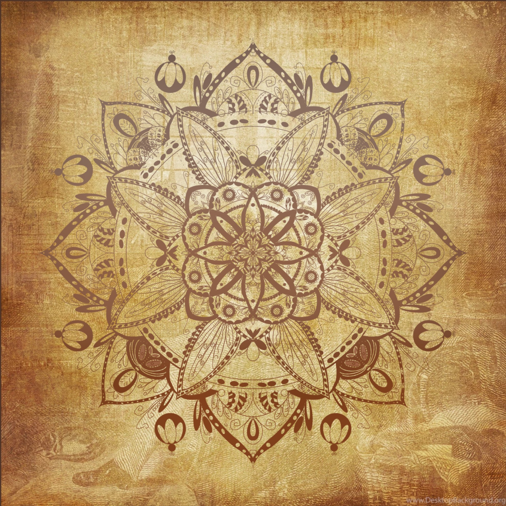

project
Mandala

Mandala is a decorative pattern project based on repetition, symmetry, and layered ornament. I wanted the image to feel calm, balanced, and detailed.
This project explores pattern, texture, and visual rhythm. I was interested in how repeated shapes can build a centered composition.